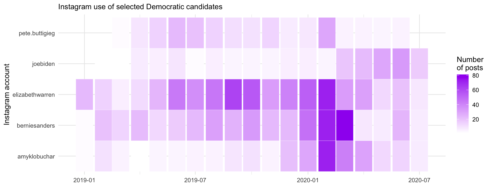
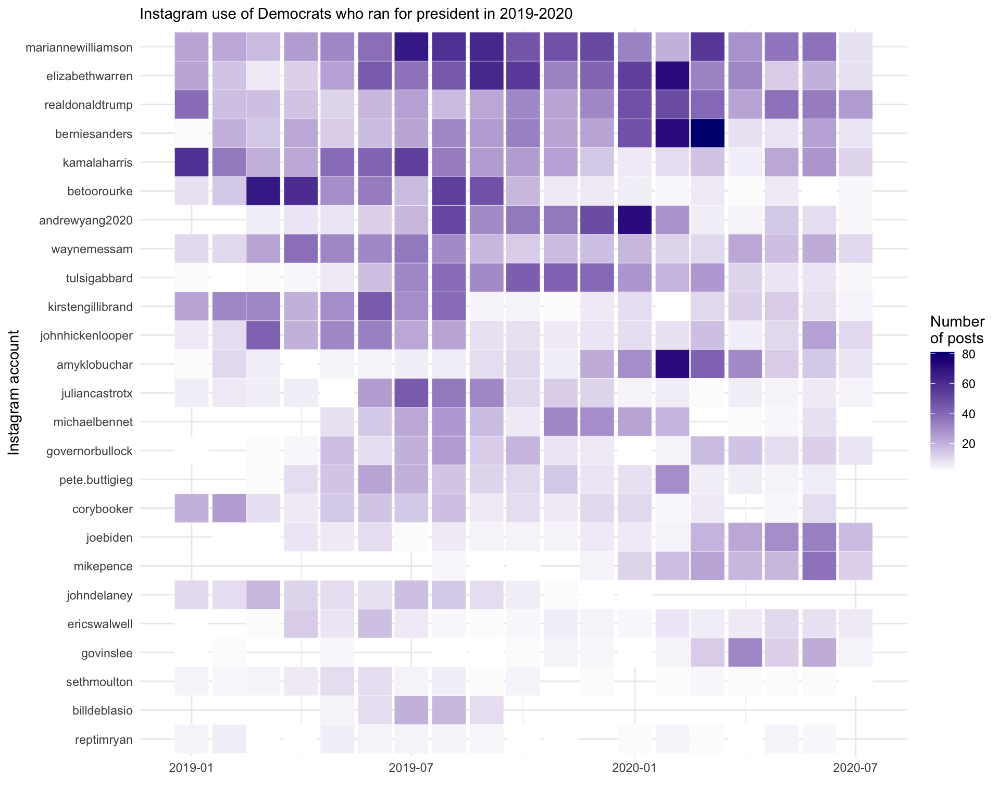
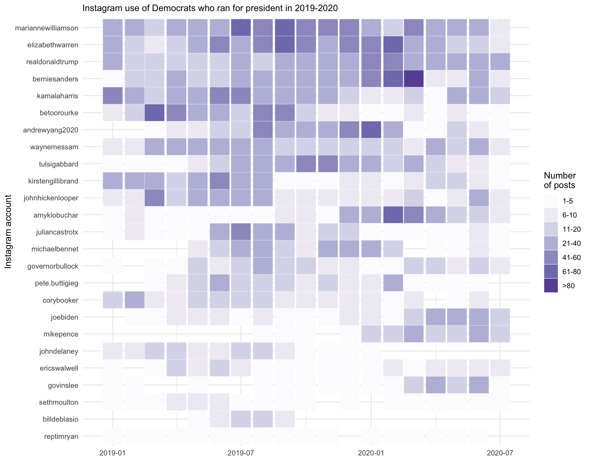

Code
library(tidyverse)
library(lubridate)This chapter demonstrates how to create heatmaps to display patterns across groups and time. We use Instagram posting data from Democratic presidential candidates during 2019-2020 to illustrate the technique.
library(tidyverse)
library(lubridate)We load Instagram posting data for US presidential candidates. This dataset contains individual posts with timestamps, engagement metrics, and account information.
insta_pres <- read_csv("data/instagram_pres_candidates_2019_to_July162020.csv")Let’s examine the structure of the data:
glimpse(insta_pres)Rows: 7,034
Columns: 17
$ Account <chr> "Juli<U+00E1>n Castro", "Bill de Blasio", "Beto O'Rour~
$ `User Name` <chr> "juliancastrotx", "billdeblasio", "betoorourke"~
$ `Followers at Posting` <chr> "43273", "5097", "828160", "2451338", "476561",~
$ Created <chr> "2019-06-27 00:33:23 EDT", "2019-09-19 17:20:43~
$ Type <chr> "Video", "Photo", "Photo", "Album", "IGTV", "Vi~
$ Likes <dbl> 136773, 925, 350099, 350694, 22729, 222839, 170~
$ Comments <dbl> 4313, 8667, 18820, 7506, 1727, 14914, 661, 2643~
$ Views <dbl> 490703, 0, 0, 0, 134223, 754254, 18292, 0, 9553~
$ URL <chr> "https://www.instagram.com/p/BzMy6_hHrLp/", "ht~
$ Link <chr> "https://www.instagram.com/p/BzMy6_hHrLp/", "ht~
$ Photo <chr> "https://scontent.cdninstagram.com/v/t51.2885-1~
$ Title <chr> NA, NA, NA, NA, "<U+201C>There is no one else like you~
$ Description <chr> "Me llamo Juli<U+00E1>n Castro y me estoy postulando p~
$ `Image Text` <chr> NA, NA, NA, NA, NA, NA, "We are moving from the~
$ `Sponsor Id` <lgl> NA, NA, NA, NA, NA, NA, NA, NA, NA, NA, NA, NA,~
$ `Sponsor Name` <lgl> NA, NA, NA, NA, NA, NA, NA, NA, NA, NA, NA, NA,~
$ `Overperforming Score` <dbl> 71.91, 61.10, 27.59, 19.86, 17.44, 17.33, 16.41~The key to creating effective heatmaps is aggregating data to the right level. For our time-based analysis, we need to extract month-year information from the posting dates.
insta_pres <- insta_pres %>%
mutate(
date = as.Date(Created),
monthyear = floor_date(date, "month")
)We create a monthyear variable by flooring each date to the first of its month. This gives us a consistent grouping variable for aggregation.
geom_tile()Heatmaps display values in a matrix format where color intensity represents the magnitude of a variable. They’re excellent for showing patterns across two categorical dimensions—in our case, candidates and time periods.
We start by filtering to five major candidates and counting posts per month:
insta_pres %>%
filter(`User Name` %in% c("elizabethwarren", "joebiden", "berniesanders",
"pete.buttigieg", "amyklobuchar")) %>%
group_by(`User Name`, monthyear) %>%
summarize(n = n(), .groups = "drop") %>%
ggplot(aes(monthyear, `User Name`, fill = n)) +
geom_tile(color = "white", size = 0.1) +
theme_minimal() +
scale_fill_gradient(low = "white", high = "purple") +
labs(x = "", y = "Instagram account", fill = "Number\nof posts",
subtitle = "Instagram use of selected Democratic candidates")
Key elements of this visualization:
To show all candidates, we need to create a meaningful ordering. Here we order candidates by their total posting volume:
# Create ordered list of accounts by total posts
account_order <- insta_pres %>%
count(`User Name`) %>%
arrange(desc(n)) %>%
pull(`User Name`)Now we can visualize all candidates:
insta_pres %>%
group_by(`User Name`, monthyear) %>%
summarize(n = n(), .groups = "drop") %>%
mutate(account = factor(`User Name`, levels = rev(account_order))) %>%
ggplot(aes(monthyear, account, fill = n)) +
geom_tile(color = "white", size = 0.1) +
theme_minimal() +
scale_fill_gradient(low = "white", high = "navy") +
labs(x = "", y = "Instagram account", fill = "Number\nof posts",
subtitle = "Instagram use of Democrats who ran for president in 2019-2020")
Sometimes a continuous color scale can be “too smooth”.
Converting counts to categories could make patterns more readable.
library(RColorBrewer)We use cut() to bin the count into meaningful categories:
insta_pres %>%
filter(monthyear >= "2019-01-01") %>%
group_by(`User Name`, monthyear) %>%
summarize(n = n(), .groups = "drop") %>%
mutate(
countfactor = cut(n,
breaks = c(-1, 0, 5, 10, 20, 50, 80, Inf),
labels = c("0", "1-5", "6-10", "11-20", "21-50", "51-80", ">80"))
) %>%
mutate(account = factor(`User Name`, levels = rev(account_order))) %>%
ggplot(aes(monthyear, account, fill = countfactor)) +
geom_tile(color = "white", size = 0.1) +
theme_minimal() +
scale_fill_manual(values = brewer.pal(8, "Purples"), na.value = "grey90") +
labs(x = "", y = "Instagram account", fill = "Number\nof posts",
subtitle = "Instagram use of Democrats who ran for president in 2019-2020")
Key differences in this approach:
brewer.pal() provides a sequential color palette designed for ordered categoriesThis chapter covered heatmaps using geom_tile():
scale_fill_gradient()) for fine-grained differencescut()) for easier interpretation of ranges